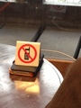

PARTICIPANTS:
DB ID: 273
Current name:
Address book name:
User name: 濱田 晶子
Phone Number:
Key:
DB ID: 0
Current name: You
Address book name: You
User name:
Phone Number:
Key:
Messages:
2013/03/27 12:09:10, "273:":
Hola Chico Somos no ese
2013/03/27 12:09:33, "273:":
Jose
2013/03/27 12:34:42, "0:You":
Que tal?
2013/03/27 13:19:41, "273:":
te espero el dia sette en
kyoto chico
2013/04/03 21:40:21, "273:":
ahOra estan
hacendo el
flamenco
en
tv...que
esta
hacendo?francamente piensaba que me
llamavapor
lo meno oTra vez en quincedias...puedo llamarte pOr telefono ?
2013/04/03 21:49:37, "0:You":
Claro!
2013/04/03 21:50:13, "0:You":
Call History : 16000 millisecs, Result: 16
2013/04/03 21:51:28, "273:":
None
2013/04/03 21:54:37, "273:":
None
2013/04/03 21:55:38, "273:":
None
2013/04/03 21:55:43, "273:":
None
2013/04/06 19:44:13, "273:":
hola
chico puedollamarte?j
2013/04/06 19:44:30, "0:You":
Clark
2013/04/06 19:44:35, "0:You":
Claro
2013/04/06 19:50:17, "273:":
None
2013/04/07 07:01:20, "273:":
BUONGIORNo estamos sul tren pEro esta
cuidado coneltyphoon
2013/04/07 09:42:47, "0:You":
12:16に新大坂に着きます
2013/04/07 10:36:58, "273:":
incredible chico te agradezco mucho cuando
llegas por favor
llama nos..hasta luego!
2013/04/07 12:18:27, "0:You":
You sent a photo.
2013/04/07 12:18:39, "0:You":
後一駅
2013/04/07 12:20:53, "273:":
’esta bien chico!estamos en
jr大阪駅中央南口 hasta!
2013/04/07 12:23:59, "0:You":
OK
2013/04/07 12:45:59, "273:":
None
2013/04/07 12:46:14, "0:You":
今大坂駅に着いたよ
2013/04/07 22:59:03, "0:You":
今バス
2013/04/07 23:08:51, "273:":
disculpe chico me siento COLPEVole paralo
que ha pAsado esta
sera pero estabamos muy lejos de la stacion y aqui estan solo avuelitos.. te
pido anyway disculpe e
teagradezco x il tuyo tempo hoye.mesAria gustado estar con TIGo mas tiempo te quero disculpe
2013/04/07 23:16:18, "0:You":
^_^
Tranquilo, la proxima vez tendremos mas tiempo
2013/04/08 08:49:45, "273:":
2013/04/08 08:49:47, "273:":
hola chico
como ha sido el viaje..?estais bien?gracias por lo que me habes DICHo,lo siento mucho para tu madre
nos somos al tuyo servicio
cuando vuelvera a la casa..tu madre te esta esperando..por favor venga a l"europa para divenir nuestro esperto
it!
2013/04/08 14:22:15, "0:You":
You sent a photo.
2013/04/08 14:22:16, "0:You":
You sent a photo.
2013/04/08 14:22:17, "0:You":
You sent a photo.
2013/04/08 14:22:18, "0:You":
You sent a photo.
2013/04/08 18:34:35, "273:":
grazie chico para las photos _ como era el cafe esta manana?el chico lo ha tenido bien?un
abrazo y ancora gracias por
tu tiempo!j
2013/04/09 20:04:26, "273:":
COMO estas?
2013/04/09 21:29:11, "0:You":
元気だよ！
ヨセはどう？
2013/04/10 09:49:18, "273:":
元気だよ！明日イタリアに帰るよ
2013/04/10 10:35:48, "0:You":
ワウ！速かった！
2013/04/11 07:56:40, "0:You":
Jose Cuniori left the chat.